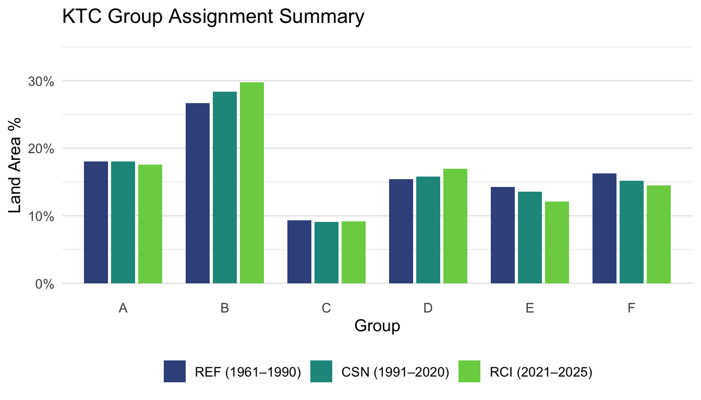
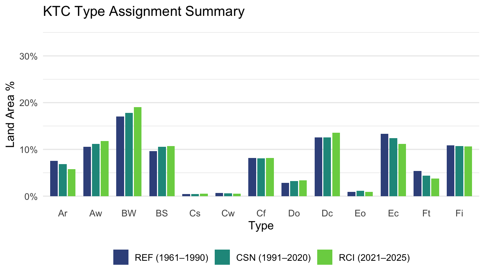
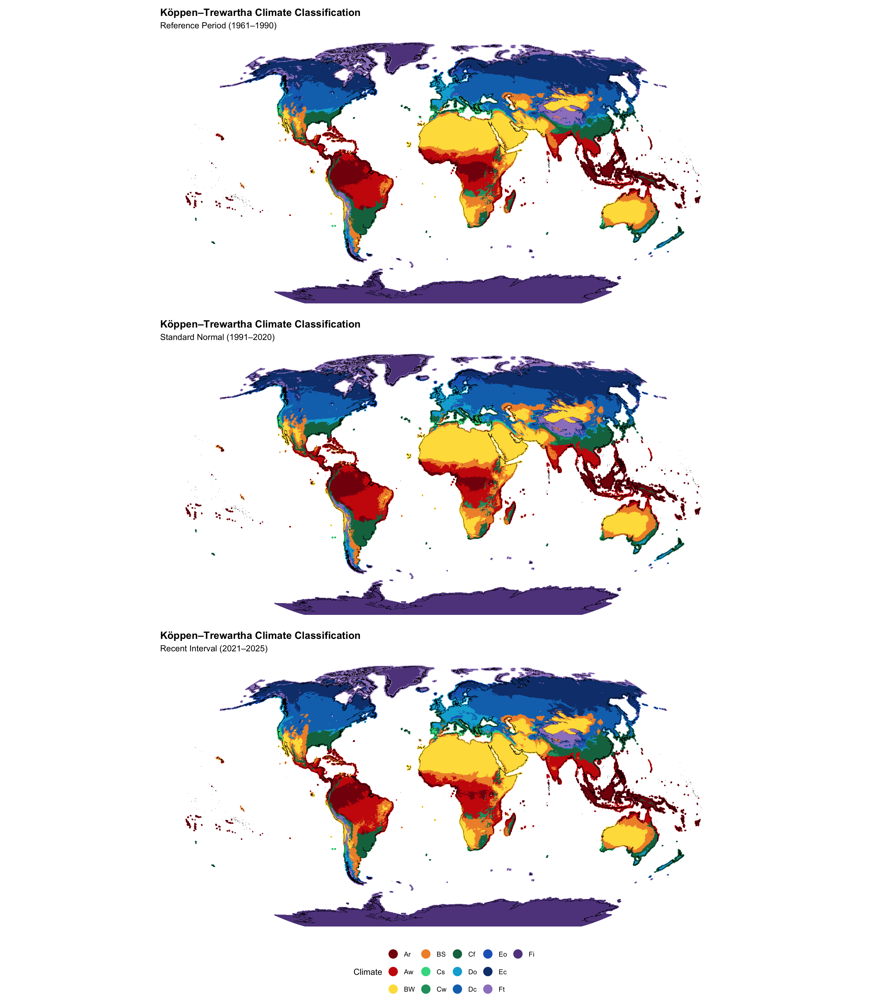

Show code
suppressPackageStartupMessages({
library(tidyverse)
library(sf)
library(gt)
library(arrow)
library(fs)
library(patchwork)
})Objective: Assign Köppen–Trewartha climate classifications to each ERA5 grid cell for the REF, CSN, and RCI climate intervals. This notebook applies a common classification sequence to the determinant dataset created in the previous step, saves a unified classification dataset for transition analysis, and summarizes the geographic distribution of climate groups and types across the three intervals.
The Köppen–Trewartha classification is assigned sequentially so that each grid cell receives exactly one climate group and type.
TMAX.ATHR and PTOT.TMIN and PL60.TG10, PTOT, PWNT, PSMR, and PMIN.TG10 and TMIN.TG10 and TMIN.The classification thresholds below are preserved from the original GCCCA workflow.
suppressPackageStartupMessages({
library(tidyverse)
library(sf)
library(gt)
library(arrow)
library(fs)
library(patchwork)
})dir_reference <- path("data", "reference")
dir_derived <- path("data", "derived")
determinants_path <- path(
dir_derived,
"climate_determinants.parquet"
)
classification_path <- path(
dir_derived,
"climate_classification.parquet"
)
ktc_codes_path <- path(
dir_reference,
"ktc_type_codes.csv"
)
coastline_path <- path(
dir_reference,
"global-coastline.gpkg"
)# Recalculate the climate classifications from the determinant dataset.
#
# Set to TRUE after climate_determinants.parquet has changed or when the
# classification dataset needs to be rebuilt. After a successful calculation,
# FALSE can be used for fast previewing and rendering.
run_climate_classification <- FALSEThe analysis uses three non-overlapping climate intervals so that the same classification method can be compared consistently through time.
source("R/climate-periods.R")
climate_periods |>
transmute(
`Period` = period_name,
`Short Label` = period_label,
`Abbreviation` = period_abbr,
`Years` = sprintf("%d–%d", start_year, end_year)
) |>
gt()| Period | Short Label | Abbreviation | Years |
|---|---|---|---|
| WMO Climatological Reference Period | Reference Period | REF | 1961–1990 |
| WMO Climatological Standard Normals | Standard Normal | CSN | 1991–2020 |
| Recent Climate Interval | Recent Interval | RCI | 2021–2025 |
period_plot_labels <- setNames(
paste0(
climate_periods$period_abbr,
" (",
climate_periods$start_year,
"–",
climate_periods$end_year,
")"
),
climate_periods$period_abbr
)
period_palette <- setNames(
viridisLite::viridis(
nrow(climate_periods),
option = "D",
begin = 0.25,
end = 0.80
),
climate_periods$period_abbr
)required_reference_files <- c(
ktc_codes_path,
coastline_path
)
if (!all(file_exists(required_reference_files))) {
stop(
"Missing classification reference files in data/reference. ",
"Expected ktc_type_codes.csv and global-coastline.gpkg."
)
}
df_ktc_codes <- read_csv(
ktc_codes_path,
show_col_types = FALSE
)
ktc_levels <- df_ktc_codes$ktc
ktc_palette <- setNames(
df_ktc_codes$hex,
df_ktc_codes$ktc
)
group_levels <- c(
"A",
"B",
"C",
"D",
"E",
"F"
)
rbn_prj <- "ESRI:54030"
sf_coastline <- st_read(
coastline_path,
quiet = TRUE
)fn_assign_ktc <- function(df) {
df |>
mutate(
grp = case_when(
TMAX < 10 ~ "F",
PTOT < (ATHR * 10) ~ "B",
TMIN >= 18 ~ "A",
TG10 >= 8 ~ "C",
TG10 >= 4 ~ "D",
TG10 >= 1 ~ "E",
TRUE ~ "X"
),
typ = case_when(
grp == "A" & PL60 <= 2 ~ "r",
grp == "A" ~ "w",
grp == "B" & PTOT < (ATHR * 10) / 2 ~ "W",
grp == "B" ~ "S",
grp == "C" &
PWNT >= PSMR * 3 &
PMIN < 30 &
PTOT < 890 ~ "s",
grp == "C" &
PSMR >= PWNT * 10 ~ "w",
grp == "C" ~ "f",
grp == "D" &
TMIN > 0 ~ "o",
grp == "D" ~ "c",
grp == "E" &
TMIN > -10 ~ "o",
grp == "E" ~ "c",
grp == "F" &
TMAX > 0 ~ "t",
grp == "F" ~ "i",
TRUE ~ ""
),
ktc = paste0(grp, typ),
grp = factor(
grp,
levels = group_levels
),
ktc = factor(
ktc,
levels = ktc_levels
)
) |>
select(
period_id,
period_name,
period_label,
period_abbr,
start_year,
end_year,
lon,
lat,
area,
lsm,
grp,
ktc
)
}
fn_class_summary <- function(
classification_df,
class_variable,
class_levels
) {
classification_df |>
filter(lsm > 0) |>
transmute(
period_id,
period_name,
period_label,
period_abbr,
class = as.character(
.data[[class_variable]]
),
land_area = area * lsm
) |>
filter(
!is.na(class),
is.finite(land_area),
land_area > 0
) |>
group_by(
period_id,
period_name,
period_label,
period_abbr,
class
) |>
summarise(
mkm = sum(
land_area,
na.rm = TRUE
),
.groups = "drop"
) |>
group_by(
period_id,
period_name,
period_label,
period_abbr
) |>
mutate(
pct = mkm / sum(mkm)
) |>
ungroup() |>
complete(
nesting(
period_id,
period_name,
period_label,
period_abbr
),
class = class_levels,
fill = list(
mkm = 0,
pct = 0
)
) |>
mutate(
class = factor(
class,
levels = class_levels
),
period_abbr = factor(
period_abbr,
levels = climate_periods$period_abbr
)
) |>
arrange(
class,
period_abbr
)
}
fn_build_summary_gt <- function(
summary_df,
title,
stub_header
) {
display_df <- summary_df |>
mutate(
period_abbr = as.character(period_abbr),
class = as.character(class)
) |>
select(
class,
period_abbr,
mkm,
pct
) |>
pivot_wider(
names_from = period_abbr,
values_from = c(mkm, pct),
names_glue = "{.value}_{period_abbr}"
)
mkm_cols <- paste0(
"mkm_",
climate_periods$period_abbr
)
pct_cols <- paste0(
"pct_",
climate_periods$period_abbr
)
display_df |>
select(
class,
all_of(mkm_cols),
all_of(pct_cols)
) |>
gt(
rowname_col = "class"
) |>
tab_header(
title = title
) |>
tab_stubhead(
label = stub_header
) |>
tab_spanner(
label = "Area (Mkm²)",
columns = all_of(mkm_cols)
) |>
tab_spanner(
label = "Earth's Land Surface",
columns = all_of(pct_cols)
) |>
cols_label(
!!!setNames(
as.list(climate_periods$period_abbr),
mkm_cols
),
!!!setNames(
as.list(climate_periods$period_abbr),
pct_cols
)
) |>
cols_align(
align = "right",
columns = c(
all_of(mkm_cols),
all_of(pct_cols)
)
) |>
fmt_number(
columns = all_of(mkm_cols),
decimals = 1
) |>
fmt_percent(
columns = all_of(pct_cols),
decimals = 1
)
}
fn_build_bar_chart <- function(
summary_df,
title,
x_label,
y_max = 0.35
) {
ggplot(
summary_df,
aes(
x = class,
y = pct,
fill = period_abbr
)
) +
geom_col(
position = position_dodge(
width = 0.8
),
width = 0.7
) +
scale_y_continuous(
labels = scales::percent_format(
accuracy = 1
),
limits = c(0, y_max)
) +
scale_fill_manual(
values = period_palette,
breaks = climate_periods$period_abbr,
labels = period_plot_labels,
guide = guide_legend(
nrow = 1,
byrow = TRUE
)
) +
labs(
title = title,
x = x_label,
y = "Land Area %",
fill = NULL
) +
theme_minimal(
base_size = 12
) +
theme(
legend.position = "bottom",
panel.grid.major.x = element_blank()
)
}
fn_build_global_map <- function(
classification_df,
period_id
) {
period_row <- climate_periods |>
filter(
.data$period_id ==
.env$period_id
)
if (nrow(period_row) != 1) {
stop(
"Expected exactly one climate period for ",
period_id,
"."
)
}
map_df <- classification_df |>
filter(
.data$period_id ==
.env$period_id,
lsm > 0
) |>
select(
lon,
lat,
ktc
)
sf_plot <- st_as_sf(
map_df,
coords = c(
"lon",
"lat"
),
crs = 4326
)
ggplot() +
geom_sf(
data = sf_plot,
aes(
color = ktc
),
size = 0.01
) +
geom_sf(
data = sf_coastline,
inherit.aes = FALSE,
color = "black",
linewidth = 0.1
) +
scale_color_manual(
values = ktc_palette,
drop = FALSE
) +
coord_sf(
crs = rbn_prj,
datum = NA
) +
labs(
title = "Köppen–Trewartha Climate Classification",
subtitle = paste0(
period_row$period_label,
" (",
period_row$start_year,
"–",
period_row$end_year,
")"
),
color = "Climate"
) +
guides(
color = guide_legend(
override.aes = list(
size = 5
)
)
) +
theme_void() +
theme(
plot.title = element_text(
face = "bold"
)
)
}if (run_climate_classification) {
if (!file_exists(determinants_path)) {
stop(
"The determinant dataset does not exist. ",
"Run 03-determinant-calculation.qmd first."
)
}
determinant_results <- read_parquet(
determinants_path
)
classification_results <- fn_assign_ktc(
determinant_results
)
write_parquet(
classification_results,
classification_path
)
} else {
if (!file_exists(classification_path)) {
stop(
"The classification dataset does not exist. ",
"Set run_climate_classification <- TRUE and run the notebook once."
)
}
classification_results <- read_parquet(
classification_path
)
}
group_summary <- fn_class_summary(
classification_results,
"grp",
group_levels
)
type_summary <- fn_class_summary(
classification_results,
"ktc",
ktc_levels
)The summary tables show the land area assigned to each Köppen–Trewartha climate group and type during the REF, CSN, and RCI climate intervals. Transition gains, losses, and net changes are calculated separately in the next stage of the workflow.
| KTC Group Assignment Summary | ||||||
|---|---|---|---|---|---|---|
| Group |
Area (Mkm²)
|
Earth's Land Surface
|
||||
| REF | CSN | RCI | REF | CSN | RCI | |
| A | 26.4 | 26.3 | 25.6 | 18.1% | 18.0% | 17.6% |
| B | 39.0 | 41.4 | 43.4 | 26.7% | 28.4% | 29.7% |
| C | 13.7 | 13.3 | 13.4 | 9.4% | 9.1% | 9.2% |
| D | 22.5 | 23.1 | 24.8 | 15.4% | 15.8% | 17.0% |
| E | 20.8 | 19.8 | 17.6 | 14.2% | 13.5% | 12.1% |
| F | 23.7 | 22.1 | 21.1 | 16.2% | 15.2% | 14.5% |
| KTC Type Assignment Summary | ||||||
|---|---|---|---|---|---|---|
| Type |
Area (Mkm²)
|
Earth's Land Surface
|
||||
| REF | CSN | RCI | REF | CSN | RCI | |
| Ar | 11.0 | 10.0 | 8.5 | 7.6% | 6.9% | 5.8% |
| Aw | 15.4 | 16.3 | 17.2 | 10.5% | 11.1% | 11.8% |
| BW | 24.9 | 26.0 | 27.8 | 17.1% | 17.8% | 19.0% |
| BS | 14.0 | 15.4 | 15.6 | 9.6% | 10.6% | 10.7% |
| Cs | 0.7 | 0.6 | 0.7 | 0.5% | 0.4% | 0.5% |
| Cw | 1.0 | 0.9 | 0.8 | 0.7% | 0.6% | 0.5% |
| Cf | 11.9 | 11.8 | 11.9 | 8.2% | 8.1% | 8.1% |
| Do | 4.2 | 4.7 | 5.0 | 2.9% | 3.2% | 3.4% |
| Dc | 18.3 | 18.3 | 19.8 | 12.5% | 12.5% | 13.6% |
| Eo | 1.3 | 1.7 | 1.4 | 0.9% | 1.1% | 0.9% |
| Ec | 19.5 | 18.1 | 16.3 | 13.3% | 12.4% | 11.1% |
| Ft | 7.8 | 6.4 | 5.6 | 5.4% | 4.4% | 3.8% |
| Fi | 15.9 | 15.7 | 15.6 | 10.9% | 10.7% | 10.7% |
The grouped bar charts compare the percentage of global land area assigned to each climate group and type across the three climate intervals.
fn_build_bar_chart(
group_summary,
"KTC Group Assignment Summary",
"Group"
)
fn_build_bar_chart(
type_summary,
"KTC Type Assignment Summary",
"Type"
)
The maps show the geographic distribution of Köppen–Trewartha climate types for each climate interval using a common classification palette. The broad spatial patterns are intentionally similar because most grid cells retain the same climate classification across the three intervals. These maps provide a geographic check of the classification results; changes between intervals are examined directly in the transition-analysis stage.
map_ref <- fn_build_global_map(
classification_results,
"reference_period"
)
map_csn <- fn_build_global_map(
classification_results,
"standard_normal"
)
map_rci <- fn_build_global_map(
classification_results,
"recent_interval"
)
map_ref /
map_csn /
map_rci +
plot_layout(
guides = "collect"
) &
theme(
legend.position = "bottom"
)